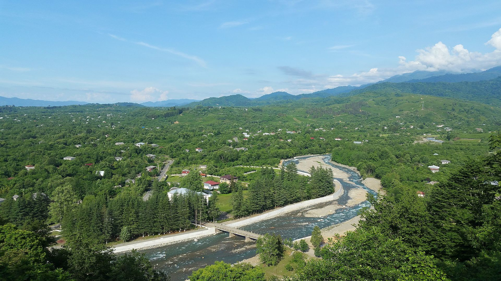

გურია — საქართველოს ისტორიულ-გეოგრაფიული მხარე, ისტორიული ეგრისის ნაწილი. დასახლებულია, ძირითადად, გურულებით. გურიის ისტორიული ცენტრია ქალაქი ოზურგეთი.პირველად სიტყვა გურია ისტორიულ წყაროებში იხსენიება VIII საუკუნეში (735-738 წწ), მურვან ყრუს ლაშქრობის დროს. როგორც მემატიანე წერს, „მურვან-ყრუმ გაიარა გზა გურიისა“. ტოპონიმ გურიის წარმოშობის შესახებ საბოლოო და დაზუსტებული მოსაზრება არ არსებობს. თედო სახოკიას მოსაზრებით, გურია შესაძლებელია გულს ნიშნავდეს (მეგრულად გური ნიშნავს გულს). გეოგრაფიულად გურია დასავლეთ საქართველოს შუაგულში მდებარეობს.არსებობს სხვა მოსაზრებებიც, რომლის თანახმადაც გურია არის ძველი წელთაღრიცხვის VIII საუკუნეში ურარტუს ისტორიულ წყაროებში მოხსენიებული ქვეყანა გურიანა. სიტყვა „გურია“ იმავე მწერლებს რამდენიმე ადგილას აქვთ მოხსენიებული, მაგრამ არა თემად, არამედ ქალაქად.ნიკოლოზ ბერძენიშვილის მოსაზრებით გურია შესაძლებელია წარმოდგებოდეს რომელიმე დასახლებული პუნქტიდან. ბერძენიშვილს ასეთად მიაჩნია სოფელი გურიანთა. მარი ბროსეს აზრით, გურია შესაძლოა მომდინარეობდეს ცეცხლთაყვანისმცემელთა ერთ-ერთი სახელწოდებისაგან „გუარე“. ნიკო მარის აზრით გურია მზის შვილს აღნიშნავს. მეგრულ-ლაზურზე „გურ“ მზეს ნიშნავს, ხოლო „ია“ ანუ „უა“ — შვილს, ვაჟს. ნიკო მარი იმასაც აღნიშანვდა, რომ „ეგერიც“ (ეგრისი) ამავე ძირის მქონე ტერმინიაო.
ისტორიულად იგი შემოსაზღვრული იყო ჩრდილოეთით რიონით, რომელიც ჰყოფდა სამეგრელოსგან, სამხრეთით ჭოროხით, სამხრეთ-აღმოსავლეთით ჭოროხ-აჭარისწყლის შესართავიდან ფერსათის მთამდე ესაზღვრებოდა აჭარა და მცირე მონაკვეთზე ასევე სამცხე. აღმოსავლეთიდან ესაზღვრებოდა იმერეთი, ხოლო დასავლეთიდან შავი ზღვა.იქიდან გამომდინარე, რომ ძველად მდინარე რიონი ფოთის ციხის გარშემო ქმნიდა ე. წ. „რიონის თვალს“, რომლის ერთი განტოტება ჩადიოდა პალიასტომის ტბაში რომლის ძველი ნაპირები დღესაც შეიმჩნევა, ისევე როგორც მასში ჩამდინარე მდინარის ძარღვი, ამდენად შესაძლებელია იმის ვარაუდი რომ ისტორიული გურია მოიცავდა ამჟამინდელი ოზურგეთის, ლანჩხუთის, ჩოხატაურის და ქობულეთის მუნიციპალიტეტების ტერიტორიას, ასევე, ნაწილობრივ ხელვაჩაურის მუნიციპალიტეტის ტერიტორიას. გურია სამ რეგიონად იყოფოდა: ზემო გურია (ტერიტორია მდინარეებს რიონსა და სუფსას შორის), ქვემო გურია (მხარე ჭოროხსა და ჩოლოქს შორის) და შუა გურია (ტერიტორია ჩოლოქსა და სუფსას შორის). შესაბამისად, არსებობდა სამი საეპისკოპოსო: ჯუმათის (ზემო გურია), შემოქმედის (შუა გურია) და ხინოწმინდის (ქვემო გურია).